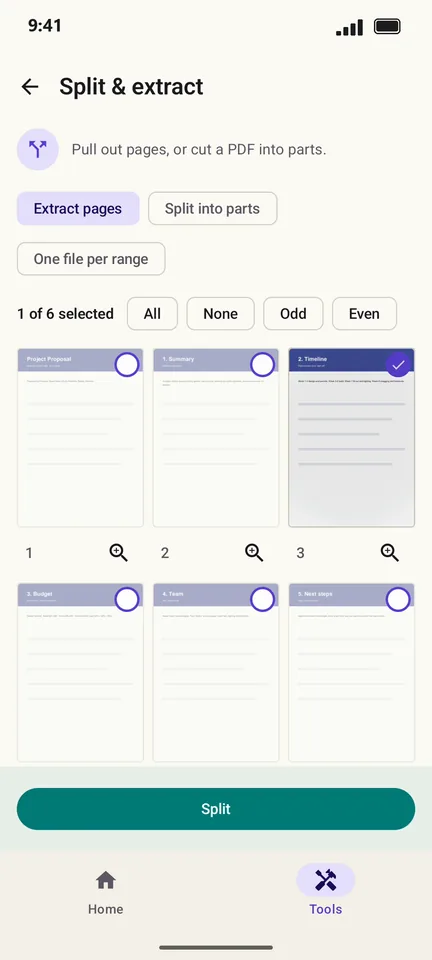
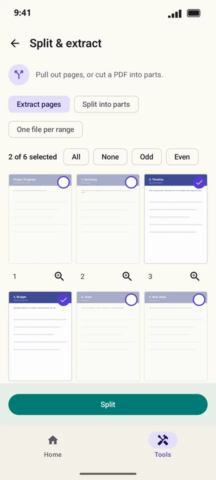
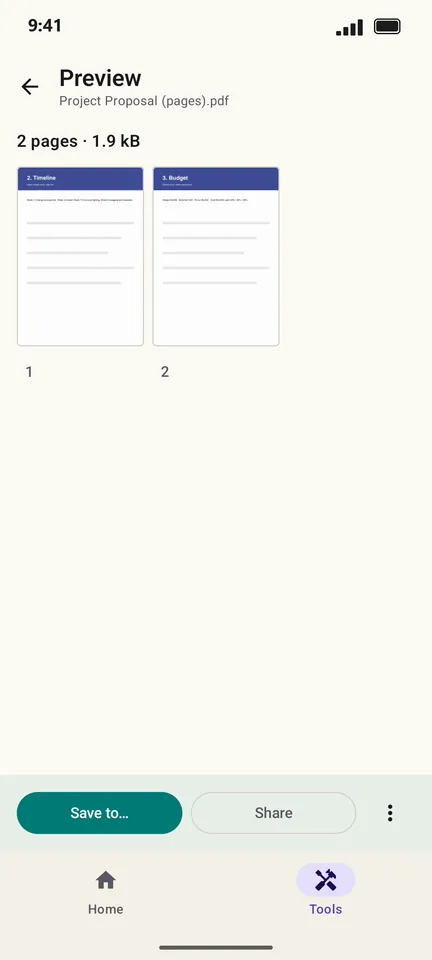

How to split a PDF or extract pages on Android
Only need the budget pages of a long proposal, or one chapter of a book? PageCat pulls out the pages you tap into a new PDF, or cuts the file into several parts, and leaves the original as it is.
Steps
Open the Tools tab, tap Split & extract and pick the PDF.

Keep Extract pages selected and tap the pages you want. Odd, Even and All select many at once.

Tap Split. The preview shows the new PDF with only those pages.

Good to know
- Choose Split into parts to cut one PDF into several files at the pages you mark.
- Turn on One file per range to get a separate PDF for each group of pages.
Questions
Does splitting change the original PDF?
No. PageCat makes new files and leaves the original untouched.
Can I extract pages from a password-protected PDF?
Yes, after you enter its password. The extracted pages keep the protection.